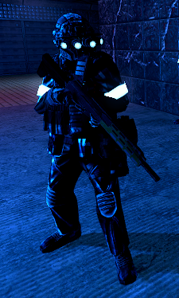
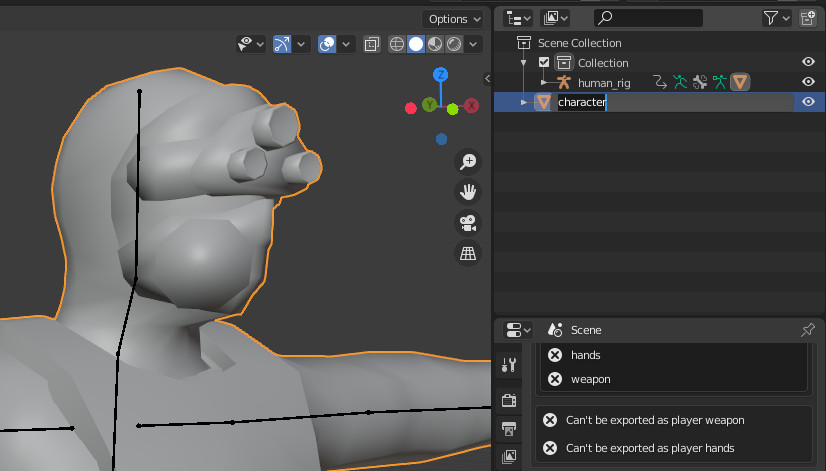
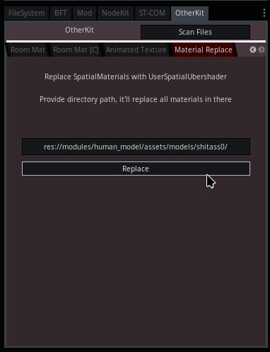
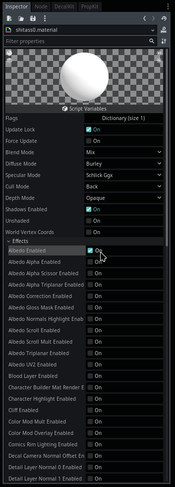

Module: human_model
Documentation last edited: October 23, 2025 at 14:33 UTC
Description
This is a monster. Alright. A class making humans look like something in this game. That's all you need to know about this entire module. It is used by NPCs to show human appearance.

How to work with this as an artist
Let's assume that you are just a guy that wants to get a human character into this game.


So, to make some alchemy magic here, you just need to follow the following patterns and do the following actions:
- Make sure you have a following structure in Blender:
└── human_rig
└── character
Where:
-
"human_rig"
is a skeleton of the character. If you need to get a skeleton for your needs, it is stored in
"res://.dev_sources/basic/human_rig.blend"
file.
However you can also just import a Character Builder model for this one.
-
"character"
mesh has to be parented to
"human_rig"
.
Character Structure
└── human_rig # Character skeleton, keep it unchanged and reuse already existing Blender armature
└── character # Character main mesh
└── character_LOD # Character LOD mesh (lower detail) that is shown at certain distance from camera
Then you just use BlenderFastTools to export your human model by pressing
"Export Character"
under
"Human Model Tools"
section. Before you press this button, make sure you have saved your .blend file with an appropriate name of the character you want to export. It is highly advised to store all human character models at
"res://.dev_sources/human_models/"
. Once you've saved your file, you can press "Export character" model, that will automatically export appropriate GLTF file into
"res://modules/human_model/assets/models/
[CHARACTER_NAME_HERE]
"
.

After exporting a character from Blender, make sure to visit this folder in Godot to import the models and configure the materials by assigning them correct values and textures in all slots.

By default, Godot is importing
SpatialMaterial
materials instead of
UserSpatialUbershader
that are used for all materials in this game. Firstly - you need to replace
SpatialMaterial
with
UserSpatialUbershader
. You can just remove the file, create a new resource (with the same name, mind you) and then it's gonna be great. However, it might be too slow, so i would like to show some easier method. Firstly, copy the folder path...

Then, open
OtherKit
menu...

Click here a couple of times...

Find "Material Replace" tab, enter the folder path, click "Replace"

While it might seem to be harder to do than doing it the plain-old way, I found it to be faster personally because "Create a new resource" window is working slowly in this project, plus i'm too lazy to save the resource properly, while this tool helps to detect any
SpatialMaterial
and replace them accordingly. However, back to configuration. When you get your hands on a new
UserSpatialUbershader
, you need to enable effects... Also, make sure to change
Diffuse Mode
to
"Burley"
and
Specular Mode
to
"Schlick GGX"
...


For the most characters you will need
Albedo
,
Normal Map
,
MRS
effects. Sometimes -
Emission
. All of these effects would be more than sufficient to make somewhat decent characters of any complexity. After you are done enabling effects, press
Force Update
to update shader in this material to fit the requirements of renderer.

After you've updated the material, you can assign textures to slots. Keep in mind - initially your material will be fully black, so do not forget to change
Albedo Color
to be white. More than that,
Normal Map Power
equals to
0.0
by default, make sure to change value to
1.0
so normal map would take full effect on lighting of this material. After all this - mr. Shitass0 should be looking fresh and clean.

Script Structure
.
├── autoload
│ ├── human_model_file_archive.gd
│ └── ragdoll_list.gd
├── config
│ ├── footstep_anim_footmark.gd
│ ├── footstep_anim_mark.gd
│ ├── footstep_marks.gd
│ └── weapon_config.gd
├── helper
│ ├── anim_event_caller.gd
│ └── ragdoll_logic.gd
├── human_model.gd
└── test
└── walker_control.gd
The heart of this entire module is
"human_model.gd"
that is the
HumanModel
class that *you are supposed to use*. That's the end of line. Close the documentation page, that's all you need to know... Just kidding, I think I also need to write how to use this class.
Other files:
-
"autoload/human_model_file_archive.gd"
is a
HumanModelFileArchive
singleton that manages some stuff related to animation files and materials.
-
"autoload/ragdoll_list.gd"
is a generic list of all ragdolls, controls some logic there too, that's
RagdollList
class.
-
"config/footstep_anim_footmark.gd"
is a
HumanModelFootMark
resource-config file that has only 2 variables: Up and down frames. This class is used in
HumanModelFootstepAnimMark
class.
-
"config/footstep_anim_mark.gd"
is the forementioned
HumanModelFootstepAnimMark
class that contains 2 arrays of
HumanModelFootMark
for both left and right legs. It is tied to a specific animation too.
-
"config/footstep_marks.gd"
is just a
HumanModelFootstepMarks
class that contains an array of
HumanModelFootstepAnimMark
, which is later loaded by
HumanModel
to mark the footstep events for variety of reasons like properly synced footstep sounds and abandoned "Foot IK" that nobody shall touch ever again.
-
"config/weapon_config.gd"
configures a weapon used by
HumanModel
, that is a
HumanWeaponConfig
resource.
-
"helper/anim_event_caller.gd"
is a hack that I wrote with love and passion and pure hatred just to get
animation_event_occured
called in
HumanModel
.
-
"helper/ragdoll_logic.gd"
is a script for ragdoll logic that handles freezing of bones, their lifetime control, removal, etc.
-
"test/walker_control.gd"
we are not talking about this one. I will never talk about this one. You don't want to know about this one.
Scenes:
-
"assets/ragdoll/ragdoll_model_v2.tscn"
- a ragdoll scene that is used for ragdoll instances of
HumanModel
.
-
"assets/hitbox/hitbox.tscn"
- a hitbox scene that is used to instance a hitbox structure of
HumanModel
, keep in mind that the rest of hitbox initialization (
KinematicBody
setup) may happen in the code of the hitbox initialization function in
HumanModel
.
NPCHuman
does its own tweaks to initialization of hitboxes, keep it in mind.
How are you supposed to use HumanModel in code?
# 1. CREATE model container with height adjustment
# - Add Spatial node as "model_tweak"
# - Adjust Y position by "MODEL_TWEAK_HEIGHT" (in NPC's scenario it is "0.0" LOL)
var model_tweak = Spatial.new()
add_child(model_tweak)
# 2. CREATE new "HumanModel" instance
# - Set "scene_root" reference to LocationBase
var humanoid = HumanModel.new()
humanoid.scene_root = LocationBaseScene.get_scene()
# 3. CONFIGURE model settings
# - Add "self" ("KinematicBody" in this case) to exclude list (I don't know why is it needed, just do it)
humanoid.exclude.append(self)
# 4. LOAD character model
# - Select model name (e.g., "merc_light_unit0")
# - Call HumanModel.load_character() with model name and container
humanoid.load_character("merc_light_unit0", model_tweak)
# 5. HANDLE weapon setup
# * Set armed animation sets (crouch, walk, move, run, idle) or unarmed/citizen animation sets
# * Enable weapon safe mode depending on your need
#
# Animation sets are just a bunch of animations in GLTF that get applied into AnimationPlayer
# of HumanModel instance.
humanoid.use_animation_set("armed_crouch")
humanoid.use_animation_set("armed_walk")
humanoid.use_animation_set("armed_move")
humanoid.use_animation_set("armed_run",
[]
, true)
humanoid.use_animation_set("armed_idle")
humanoid.set_weapon_safe_mode(true)
# You can do that weapon stuff any time you want btw.
# At least I think you can... I used it once...
humanoid.set_weapon("AR-100")
# 6. CONNECT root motion callback, if necessary
# - Link "on_root_offset" signal to handler function
humanoid.connect("on_root_offset", self, "on_root_offset_func")
Useful functions
# Enter the ACT mode and play an ACT animation
humanoid.set_act_mode(true)
humanoid.play_act_anim("heavy_unit_stun")
To be fair there's more to be said about this class, but I'm not quite sure what should be told. If you have something to point out - contact me, Dadaskis, I'll edit the docs accordingly. But other than that - it's done.
General Information
Root directories list
assets, docs, src
Nodes
HumanModelFileArchive
RagdollList
HumanModelAnimEventCaller
ragdoll_logic
walker_control
Classes
Resources
HumanModelFootMark
HumanModelFootstepAnimMark
HumanModelFootstepMarks
HumanWeaponConfig
Other Scripts
None